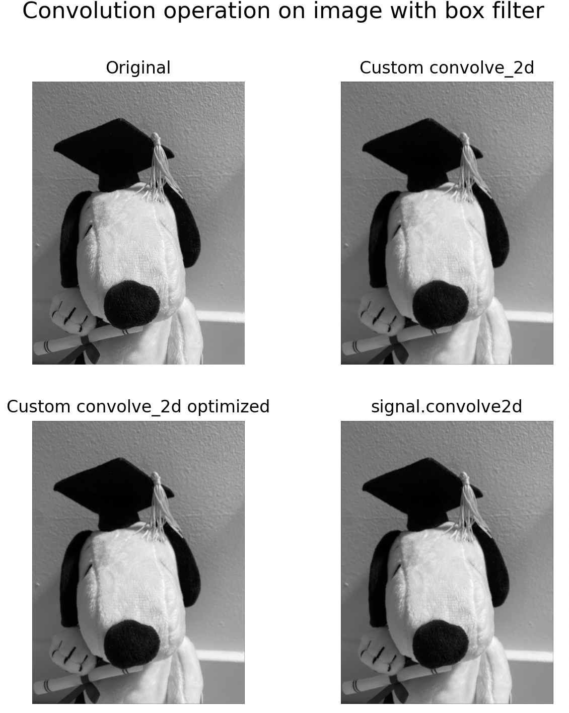
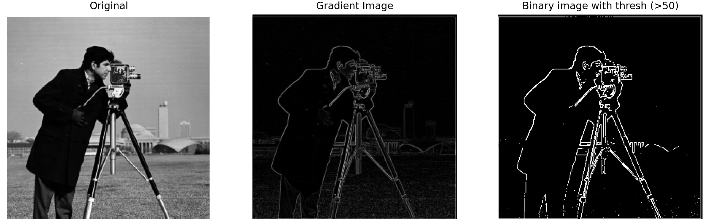
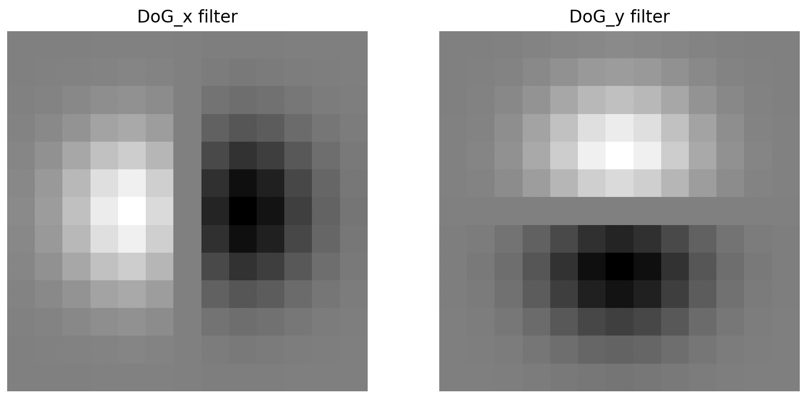
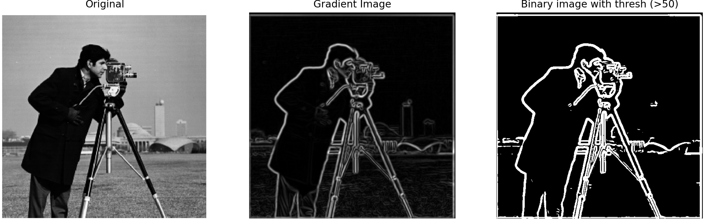

Implemented convolution with four loops, then two loops (using NumPy elementwise multiplication for the kernel),
and finally compared against the built-in scipy.signal.convolve2d. Although the results of these convolutions look the same, the compute time varied dramatically. Below are the results shown for a 15x15 convolution which provided a more perceptable blur.
Time taken for (4 for loop) custom convolve: 573.5813066959381 seconds
Time taken for (2 for loop) custom convolve: 30.86306118965149 seconds
Time taken for signal.convolve2d convolve: 3.6357760429382324 seconds
Custom Convolution (4 loops)
def convolve_2d(im, kernal):
im_h, im_w = im.shape
k_h, k_w = kernal.shape
p_h, p_w = k_h // 2, k_w // 2
padded = np.pad(im, ((p_h, p_h), (p_w, p_w)), mode="constant", constant_values=0)
output_im = np.zeros_like(im, dtype=np.float32)
for y in range(0, im_h):
for x in range(0, im_w):
res = 0.0
for i in range(0, k_h):
for j in range(0, k_w):
res += kernal[i,j] * padded[y+i,x+j]
output_im[y,x] = res
return output_im
Custom Convolution (2 loops)
def convolve_2d_optim(im, kernal):
im_h, im_w = im.shape
k_h, k_w = kernal.shape
p_h, p_w = k_h // 2, k_w // 2
padded = np.pad(im, ((p_h, p_h), (p_w, p_w)), mode="constant", constant_values=0)
output_im = np.zeros_like(im, dtype=np.float32)
for y in range(0, im_h):
for x in range(0, im_w):
window = padded[y:y+k_h, x:x+k_w]
output_im[y,x] = np.sum(kernal * window)
return output_im
Below is the result of applying a 15x15 box filter using each method.

Part 1.2: Finite Difference Operator
Computed partial derivatives in X and Y of the cameraman image using Dx and Dy respectively, which was then used to compute gradient magnitude and binarized edge map.

Part 1.3: Derivative of Gaussian (DoG) Filter
Smoothed the image with a Gaussian filter, then computed derivatives using DoG filters. The improvements over the result of 1.2 include removal of high frequency noise using gaussian before convolution which results in smoother/prominent edges and less noise. Note: the evaluations above and below are done with a threshold of 50 pixels to create the binary edge map.


Part 2: Fun with Frequencies!
Part 2.1: Image Sharpening
Implemented unsharp masking to sharpen images by enhancing their high frequencies.
To evaluate the sharpening approach, the original image was blurred with a Gaussian filter,
and then sharpened again. The sharpening step enhances the blurred image slightly, but it cannot fully recover
the original fine details that were lost during blurring. Shapening only amplifies the edges and sometimes might .
OriginalSharpened (after blur)
Part 2.2: Hybrid Images
By combining low frequencies of one image and high frequencies of another, we created hybrid images.
Part 2.3: Gaussian and Laplacian Stacks
We implemented Gaussian and Laplacian stacks for multi-resolution blending.
Part 2.4: Multiresolution Blending (The Oraple)
We blended an apple and an orange seamlessly using Laplacian stacks and Gaussian mask stacks.